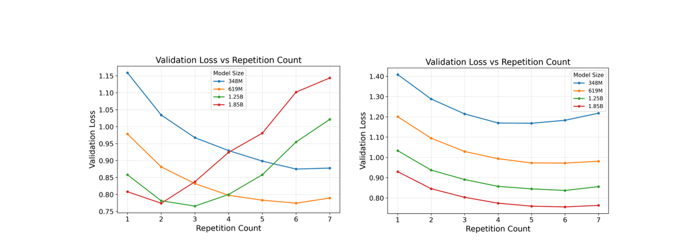
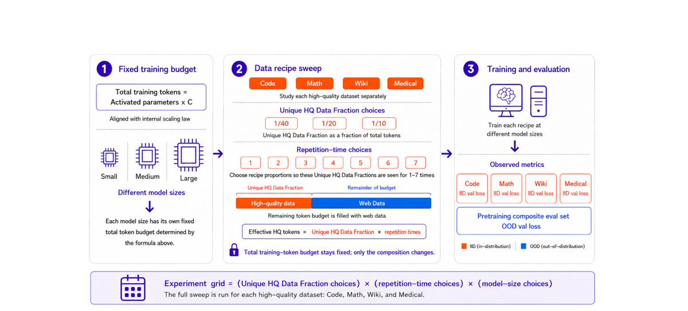
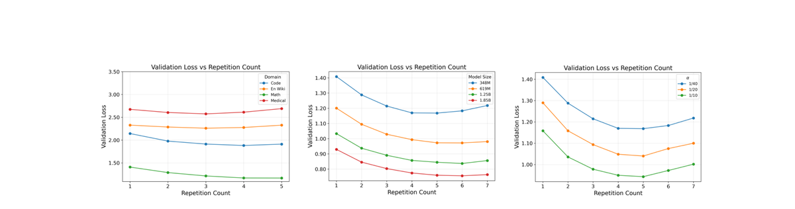
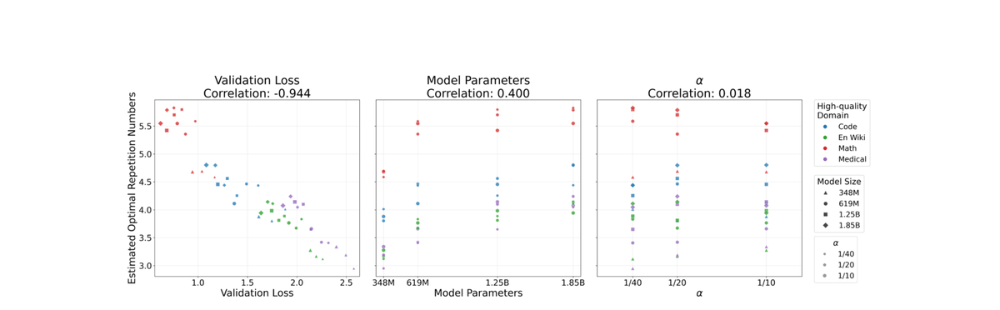
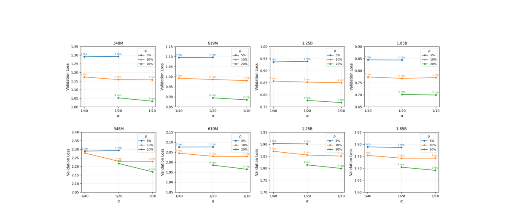
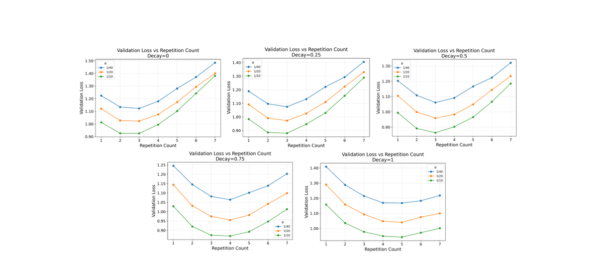

LLM规模越大，需要的训练token越多（要保持合适的tokens-per-parameter，TPP）。但高质量领域数据比通用网页数据难扩展得多：模型越大、预算越大，它在混合数据里的占比反而越低。重复使用手头的高质量数据能抵消这种稀释，但重复过头又会过拟合。
本文（清华 + ByteDance Seed）在实用LLM scaling下研究这个权衡。三个反直觉发现：固定TPP时最优重复次数随模型变大而轻微增加；不同领域间最优重复次数与最终验证损失强负相关；唯一数据量几乎不影响最优重复次数。
这意味着：用相同TPP的小代理模型调的重复次数，可以直接给大模型用：保守且有效。
LLM通常预训练在多种领域的混合数据上：通用网页文本、代码、数学、科学语料、多语言内容。模型变大，compute-optimal训练需要更多token。这造成不对称的数据扩展问题：通用网页数据容易扩展，高质量领域数据却难以同速扩展。

如果领域数据量固定，总预算增长时它的混合比例会下降。近期工作表明，在数据混合下，知识密集领域只有当混合比例超过某个临界阈值时才会被学到；低于阈值，更多训练也拿不到目标知识。所以扩展数据时保持足够的高质量领域比例很重要。
先验工作广泛研究了数据重复，但对高质量领域数据，重复是抵消数据稀释的直接办法，也可能增加过拟合风险。本文研究这个权衡：重复高质量数据的领域学习收益vs过拟合风险，并为不同领域找出最优重复次数。
先前的跨规模比较通常固定训练数据量，而非保持tokens-per-parameter（TPP = D/N）不变。这个区别导致对重复的结论相反。如图1左：D固定时，更大模型暴露在同样的重复数据集上，过拟合更早发生，最优重复次数趋近1。
而当训练token预算随模型大小按固定TPP增长时（图1右），最优重复次数反而随模型变大而增加。这支持从小代理模型做保守迁移：一个在小模型上不导致过拟合的重复次数，在相同TPP的更大模型上也不太可能过拟合。
研究4个高质量领域：Code、Math、Wiki、Medical。对每个领域，改变唯一数据量和重复次数，同时为每个模型大小保持总训练token预算固定。这隔离出数据重复如何与领域属性、唯一数据规模、模型规模交互。

设模型大小N，总token预算D_N = TPP·N（TPP为大于100的常数）。唯一高质量token数U = α·D_N，其中 α ∈ {1/40, 1/20, 1/10}；重复次数e ∈ {1,...,7}。总高质量token = eα·D_N，剩余用不重复的网页数据填充 (1-eα)·D_N。
关键区分：α 控制唯一高质量数据量，e控制这个固定子集被重访多少次，乘积eα 决定高质量token在训练流中的最终占比。每个配置只重复一个高质量领域，不同时混合多个。评估用域内验证损失与域外性能。
图3左：强领域依赖。Math在约5次重复达到最小值，Wiki、Code、Medical更早：最优重复次数跨领域差异显著。图中：模型大小的影响。固定 α 下，模型变大，最优重复次数右移：对模型规模有中等依赖。图右：α 的影响。增大 α 稳定降低验证损失，但最小值位置几乎不动：α 对最优重复次数几乎没有影响。


总括：最优重复次数主要取决于数据领域和模型大小，对 α 高度不敏感。
量化：对每个（领域、模型大小、唯一分数）组合，拟合验证损失对重复次数的二次函数，用曲线最小值作为估计最优。与最小验证损失的Pearson相关为-0.944（强负相关），与模型大小0.400，与唯一数据分数0.018（几乎无关）。
用一个one-hot线性回归模型解释实验观察。每个坐标k代表一个知识单元，频率服从幂律；模型容量限制在N维投影。重复优化降低知识获取误差，但增加噪声拟合误差。
最优重复次数是噪声拟合的边际效应开始主导的点。定理给出：在固定TPP（线性数据-模型扩展）下，停止时间（即最优重复轮数）随模型大小增长：从理论上解释了为什么固定TPP时更大模型能容纳更多重复。
直观：更大模型有更多参数分摊同一份数据，噪声拟合来得更晚，所以重复收益的区间更长；而损失低的领域意味着数据「好学」，同样可以在噪声接管前重复更多次。
固定领域总占比（ρ=αe）时，重复能替代多少唯一数据？结论强依赖领域：Math从1到4次重复验证损失只小幅上升：重复的Math数据基本能替代等量唯一数据；Wiki则不同，重复次数超过2后损失急剧恶化。


OOD视角：固定总高质量与网页数据占比时，用重复token替换唯一token对OOD预训练性能只有有限影响：域内损失能告诉我们重复是否安全，但OOD表现相对不敏感。
学习率调度有清晰作用：WSD越早开始decay，能在越少重复后就出现退化；延迟或去掉decay允许更多重复。所以最优重复次数不是调度无关的：配置重复时要把LR schedule一起考虑。
本文研究固定TPP下的跨模型规模领域数据重复。三个结论：最优重复次数与领域最小验证损失强负相关（损失低的领域能扛更多重复）；固定TPP时最优重复次数随模型大小轻微增加；对唯一高质量token分数几乎不敏感。
实用含义：可以在相同TPP的小代理模型上扫一遍重复次数，得到的结果直接给大模型用：因为大模型在小模型不过拟合的重复次数下更不会过拟合。这是配置高质量领域重复次数的一条保守且高效的路径。
局限与未来：当前每轮只重复一个高质量数据集，未来应研究多个领域同时重复及交互；另一个方向是发展从中小模型结果预测大模型最优重复次数的定量scaling规则，实现更精确高效的数据配方选择。
参考：https://arxiv.org/abs/2608.14071